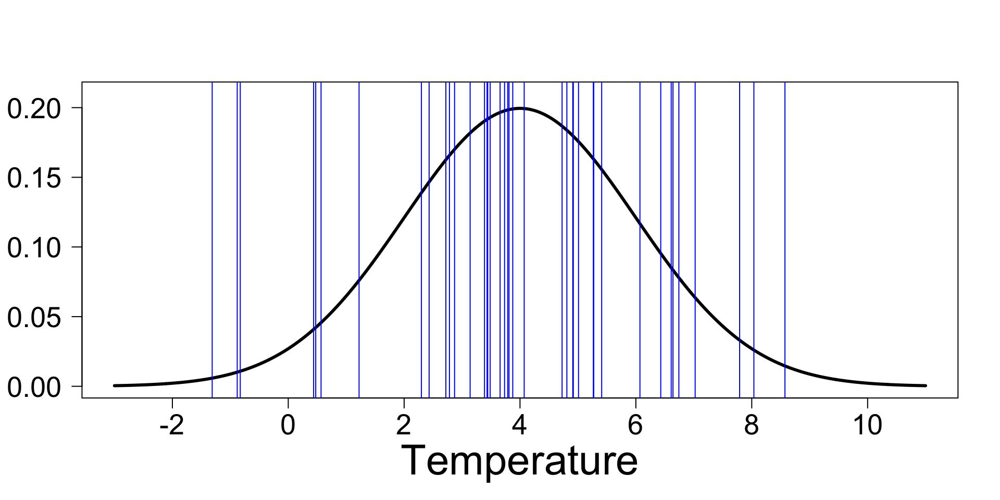
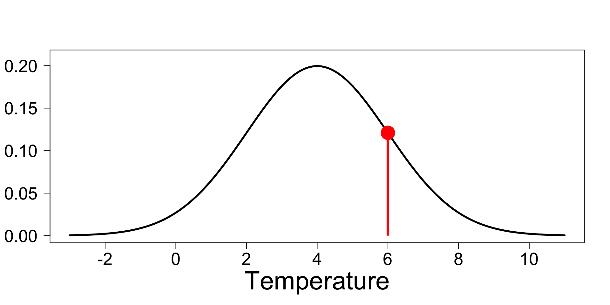
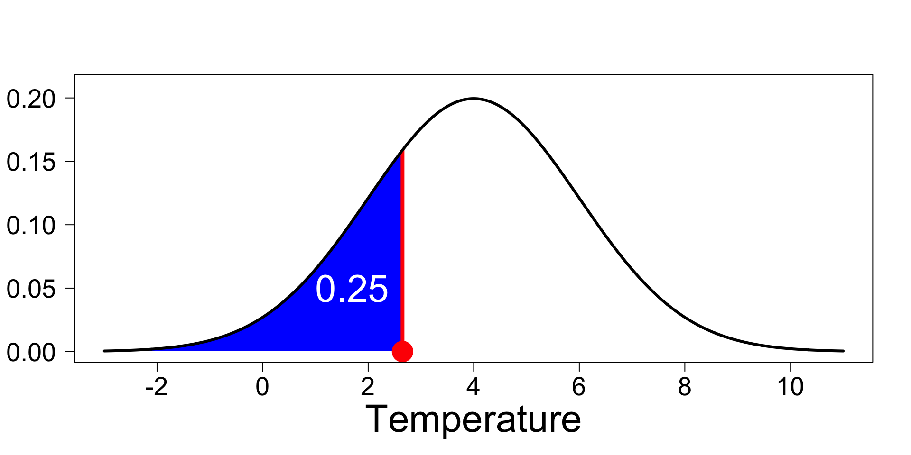
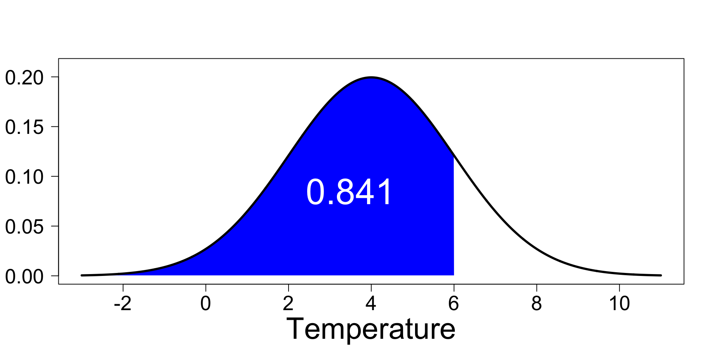

To understand distributions, we first need to have a basic understanding of probabilities.
A bit of history
Unlike many other fields of science, the first contributors in the study of probability were not scholars, they were gamblers !
For example, the emperor Claudius (10 BC – 54 AD), who was an avid gambler (he had a carriage built to allow him and his party to gamble while travelling) wrote a treatise on randomness and probability.
If you want a fun book to read about probabilities, its history and the difficulty of working with probabilities, I strongly recommend
The basics of probabilities
A probability ALWAYS ranges between 0 and 1
A probability of 0 means that an event is impossible
Example: The probability that a dog and a cat naturally reproduce is 0
A probability of 1 means that an event is certain
Example: The probability that you are in this summer school as we speak is 1
The basics of probabilities
Notation
A classic way to write the probability of an event is to use the notation \(P\).
Example
The probability that it rains as you walk outside after the lecture is written as
\[P(r)\] where \(r\) is the event you are interested in. Here, \(r\) is a rain event as you walk outside after the lecture today
Probabilities and events
When dealing with discrete (countable) events, it is very practical to know the number of events that can occur.
In the simplest case, we can either measure the probability of an event to occur or not.
Example
It can either rain or not. Mathematically, the probability that it rains is written as
\[P(r)\] and the probability that it does not rain would be written as
\[1 - P(r)\]
Probabilities and events
Usually, these basic notions of probabilities are presented using coin flipping. When a coin is flip, it is usually assumed that
\[P(r)=0.5\]
However, in probability theory, \(P(r)\) can have any value ranging between 0 and 1.
Example
What do you think is the probability that it will rain at the end of the lecture?
Probabilities and events
At this point we can note that when we add the probabilites of all possible events, the sum will always be 1
Example
\[P(r) + (1-P(r)) = 1\]
This is true only if the events are independent from each other
Independent !?
Events that are independent from each other means that if an event occurs it is in no way related to the occurrence of another event.
Example
If we assume that weather events like a rainy day are independent from one another, it means that if it rains today it is unrelated to the weather of yesterday or tomorrow.
Note : This can be a good or a bad or dangerous assumption to make depending on the problem you are working on.
Bernoulli distribution
Jacques Bernoulli (1655 - 1705)
Bernoulli distribution
The probability distribution (or probability mass function) of the Bernoulli distribution defines the probability of an event to occur given that there is only one other event that can occur (e.g. rain or no rain)
Classically, we will give a value of 1 to one event (no rain) and 0 to the other (rain).
From a mathematical perspective, it does not matter which event is given a 1 (or a 0). However, often it is common practice to choose how we give values based on the interpretation we make of the results.
Bernoulli distribution
Mathematically, the probability mass function of the Bernoulli distribution can be written as
\[\begin{align*}
p \quad & \text{if} \quad x =1\\
(1-p) \quad & \text{if}\quad x =0
\end{align*}\]
where \(p\) is a shorthand for \(P(x)\) and \(x\) is the event of interest.
Moment interlude
Using probability distributions is practical because from them we can derive general information characterizing the each distribution.
These characteristics are know as moments of a distribution… And you know them :
Mean
Variance
Skewness
Kurtosis
…
Moments of the Bernoulli distribution
For the sake of conciseness, in this course, we will discuss only the first two moments of distributions.
Mean
\[p\]
Example
If the probability that it rains is \(p=0.14\) in any given day, it means that, on average in a week (7 days) we should expect it will rain 1 day.
Moments of the Bernoulli distribution
Variance
\[p(1-p)\]Example
If the probability that it rains is \(p=0.5\) in any given day, it means that, across multiple weeks, some weeks might have no rain while some weeks it might rain all days because the variance is
If you want to go deeper and learn about the other moments of the Bernoulli distribution (as well as other aspect of the distribution), take a look at the Wikipedia page of the Bernoulli distribution
So far, we focused on a situation where the two events to consider either occur or not.
There are many problems where interest lies in studying the likeliness of an event occurring over a known number of independent trials.
Example
How many rainy day will there be during the five days of our summer school ?
Binomial distribution
Put differently, the binomial distribution is designed to approach questions where we are interested in finding the number of success (e.g. it rains !) out of a known set of independent trials (e.g. the five days of the summer school).
The binomial distribution is a generalisation of the Bernoulli distribution
It is a common distribution used when sampling is done with replacement
Let’s take a look at the math of the Binomial distribution
Again, for conciseness, we will focus on the first moment (mean) and second moment (variance) of the binomial distribution.
Mean\[np\]
Example
If the probability that it rains is \(p=0.14\) in any given day of the 5 days of the summer school, it means that on average we expect it will rain 0.7 days of the summer school (so 1 or no days)
\[np = 5 \times 0.14 = 0.7\]
Moment of the binomial distribution
Variance
\[np(1-p)\]
Example
If the probability that it rains is \(p=0.5\) in any given day, it means that, across multiple weeks (7 days), roughly speaking some weeks might have 1 day of rain while others might have 5 because the variance is
If you want to learn more about the other moments of the binomial distribution (as well as other aspect of the distribution), take a look at the Wikipedia page of the binomial distribution
\(\sigma\) : The standard deviation of the distribution
Moment of the Gaussian distribution
Mean
\[\mu\]
Example
Let’s say we measure the length of the right wing of individual of this species of (angry) bird, it is expected that the wing length will follow a Gaussian distribution with a mean of \(\mu\). We will look at this in more details in the practical exercices later today.
Moment of the Gaussian distribution
Variance
\[\sigma^2\]
Example
Let’s say we measure the length of the right wing of individual of this species of (angry) bird, it is expected that the wing length will follow a Gaussian distribution with a variance of \(\sigma^2\). We will look at this in more details in the practical exercices later today.
General properties of distributions
In R, there are 4 functions associated to every distribution. As an example, for the Gaussian distribution, they are
rnorm
dnorm
pnorm
qnorm
Knowing what these functions do will be very useful for this course
rnorm
The r in rnorm is for random
This function allows us to randomly sample directly from the distribution of interest.
Example
Let’s assume that we look at the historical record and gather the minimum temperature measured on today’s date for the past 40 years here at the Gault Natural Reserve. Let’s assume that the random sample of 40 temperature measurements has an average of \(4^{\circ}C\) and a standard deviation of \(2^{\circ}C\). We can simulate these values as follow
rnorm(40, mean =4, sd =2)
rnorm(40, mean = 4, sd = 2)

dnorm
The d in dnorm is for density
This function gives the height of the distribution for a chosen value.
Example
If we assume that the average temperature at this time of the year is \(4^{\circ}C\) with a standard deviation of \(2^{\circ}C\), we can calculate that the likeliness that a temperature of \(6^{\circ}C\) to occur is
dnorm(6, mean =4, sd =2)
[1] 0.1209854
dnorm(6, mean = 4, sd = 2)

qnorm
The q in qnorm is for quantile
This function gives the value of the distribution given a certain density
Example
If we assume that the average temperature at this time of the year is \(4^{\circ}C\) with a standard deviation of \(2^{\circ}C\), qnorm allows us to calculate the temperature expected to be obtained in the lowest quartile (1/4). It is calculate as
qnorm(0.25, mean =4, sd =2)
[1] 2.65102
qnorm(0.25, mean=4, sd=2)

pnorm
The p in pnorm is for probability distribution function
This function gives the integral (area under the curve) up to a specified value.
This is particularly useful because it informs us about the probability that an event is likely to occur (of course assuming a it follows a normal distribution).
pnorm
Example
If we assume that the average temperature at this time of the year is \(4^{\circ}C\) with a standard deviation of \(2^{\circ}C\), pnorm will tell us the probability to have a temperature lower or equal to \(6^{\circ}C\). This is calculated as
pnorm(6, mean =4, sd =2)
[1] 0.8413447
pnorm(6, mean = 4, sd = 2)

Binomial and Bernoulli distribution
As I mentionned previously, these function are available in base R for a large number of distributions.
Binomial distribution
rbinom
dbinom
qbinom
pbinom
Bernoulli distribution
However, sometimes we must know a little bit of theory (as I have shown today) to use the right function.
rbinom
dbinom
qbinom
pbinom
Bernoulli distribution
rbinom
dbinom
qbinom
pbinom
With size = 1
Other distributions
Statisticians and biologists have been very, very (!!) creative in proposing new probability distribution for specific problems
If you want to learn about the diversity of distributions that are out there, take a look at :